💖
Voglio sperare che tu sia arrivata fin qui; qualora l'avessi fatto, troverai delle canzoni.
Tantissime volte è successo che non fossi in grado di trovare le parole giuste per esprimere quello che provavo o volevo dire.
Quando non ci riuscivo, ho sempre preferito farlo attraverso la musica; sentivo come se mettermi a nudo attraverso essa fosse una cosa più autentica delle parole stesse.
Ci tengo a precisare che ogni traccia che troverai è stata selezionata con cura, e ognuna di esse è stata posizionata nell'ordine che ho ritenuto più giusto.
Mi auguro che, ascoltando queste ultime, tu possa provare almeno un briciolo delle emozioni che ho provato io assemblando il tutto.
Per finire, ci tengo che tu sappia che questo non ti obbliga ad ascoltare tutto d'un fiato; è stata pensata per essere un'esperienza godibile il più possibile, quindi prenditi il tempo necessario fra una canzone e l'altra, ma gradirei molto che nessuna di esse venga saltata, perché in ognuna c'è un pezzo di me che ho deciso di donarti, come gesto d'amore che spero non sia l'ultimo.
L.

lyrics
Good to not be you
It was love at first sight and misery after two months
Always feeling fucked up either by love or no love
"I thought you was married to the single life," she said
I wasn't necessarily looking for happiness, just less pain
I should've said somethin'
You said the only thing wrong with money is you ain't have enough of it
You said you deserve better, and now so do I
Anyways, the best part of us was me
When you got with me, you were a genius
Now without me, you have to live life as an idiot
I don't write songs, I write life, I told you that
And you were only fuckin' with my feelings because you didn't know your own
I do miss who I thought you were
And sometimes I'm miserable without you
So it's just like you're still here, shit
I need you to show me
Love me, love me closely
Love me like you own me and my heart
I need you to show me
Love me, love me closely
Love me like you own me and my heart, yeah
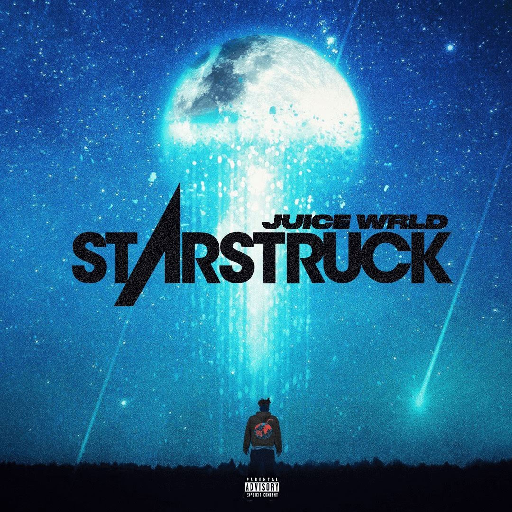
lyrics
Yeah, we're playing in bed You see the- I lock eyes, our eyes lock Our eyes locked, you can see the sadness My heart stops, every time you call my name My jaw drops, you fell from the stars, and I'm starstruck You fell from the stars, girl, am I lost? When you're down, when you're sad, is it my fault? I apologize for all of the lies, oh I won't treat you like the rest of them guys, oh I'm off the Percs, she don't condone it You say it makes me act atrocious But I can't stand life when I'm sober Take my heart, I'll hand it over Six months in, it gets colder I don't want us to be over Let's make love 'til we die And let's fuck until we slump over Be my first aid, I know you hate to see me bleed I don't deserve your love, I tend to fuck up everything It feels like I'm not enough, 'nough, 'nough, no This a conversation, not a love song Our eyes locked, you can see the sadness My heart stops, every time you call my name My jaw drops, you fell from the stars, and I'm starstruck You fell from the stars, girl, am I lost? When you're down, when you're sad, is it my fault? I apologize for all of the lies, oh I won't treat you like the rest of them guys, oh Everything that's wrong with me, is everything that's wrong with you You threw the blade, I caught the knife I'm right back in your room tonight Reflections in the broken glass No, I can't fix your broken past Count my blessings, close my eyes I'm right back in your room tonight (Oh) I can't escape your shadow (Oh) I can't forget what we don't know (Oh) Your love is a sentence to death row And you've got a seat in the front row (Oh) Hold me close, but you're cold as ice (Oh) Watch me choke on every line (Oh) And it feels like Hell tonight, it feels like Hell Our eyes locked, you can see the sadness My heart stops, every time you call my name My jaw drops, you fell from the stars, and I'm starstruck You fell from the stars, girl, am I lost? When you're down, when you're sad, is it my fault? I apologize for all of the lies, oh I won't treat you like the rest of them guys, oh We met in a Twilight Zone I fall apart but she keep me whole We met on the West Coast But I still see Miami in your soul Our eyes locked, you can see the sadness My heart stops, every time you call my name My jaw drops, you fell from the stars, and I'm starstruck You fell from the stars, girl, am I lost? When you're down, when you're sad, is it my fault? I apologize for all of the lies, oh I won't treat you like the rest of them guys, oh I'm here to serve a purpose Girl, I know I ain't picture-perfect One more thing I know for certain If you leave, I'll close the curtains
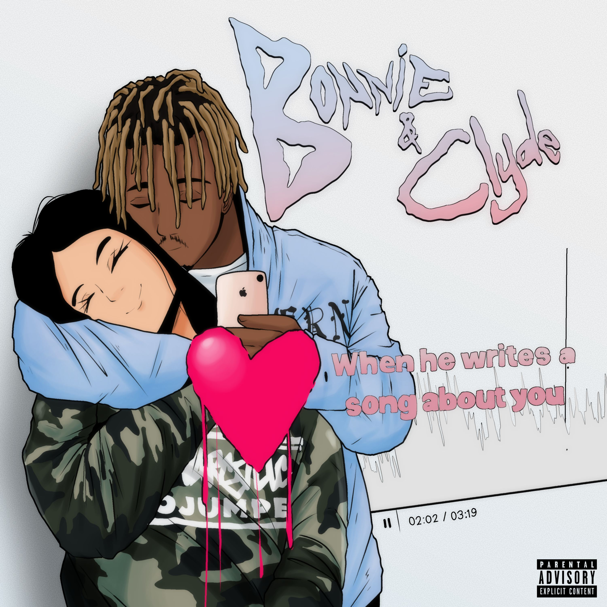
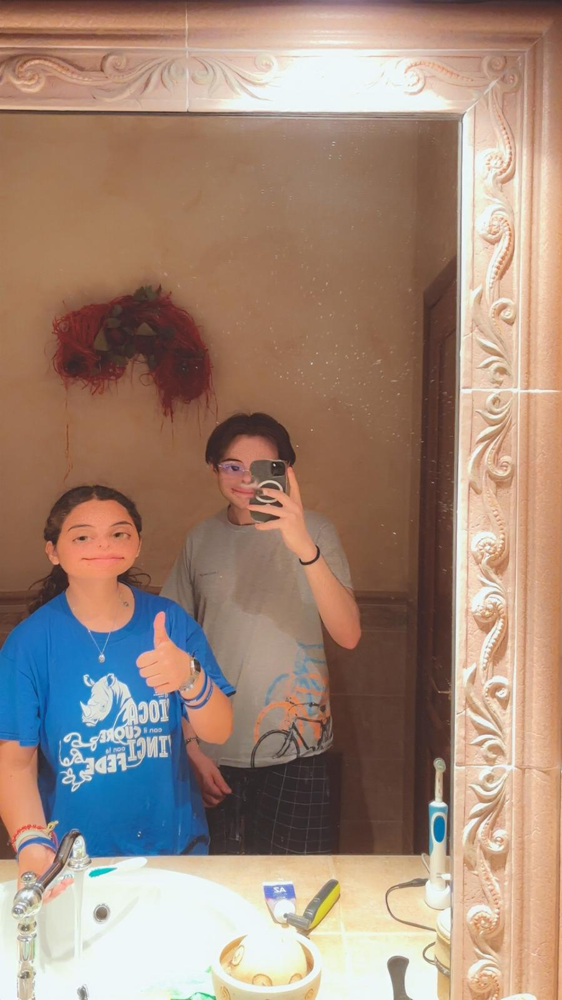
lyrics
Honorable Court Missed the days I woke up, you were next to me Get a quick reply when you be textin' me And you always keep it real, don't gotta flex to me So no matter where I go, I'll always need you by my side Yeah, you're down to ride, Bonnie and Clyde If a nigga try to take you, straight homicide That's on my life, just be my wife Let me come and sweep you right up off your feet I'm so used to sadness, that shit follows me Happiness you bring, baby, be my queen Yeah, I know these demons comin' after me With you in my arms, I ain't worried 'bout a thing Can't get enough of your kisses, baby, I miss it When I'm around you, I fit in, usually feel like a misfit I know we just met, but baby, this is different You're so self-sufficient, choke you like submissive Baby, if I said it, then I fuckin' meant it I will never treat you bad like these other niggas I know these prescriptions got a nigga trippin' But on the real, I'm tryna overdose on you Missed the days I woke up, you were next to me Get a quick reply when you be textin' me And you always keep it real, don't gotta flex to me So no matter where I go, I'll always need you by my side Yeah, you're down to ride, Bonnie and Clyde If a nigga try to take you, straight homicide That's on my life, just be my wife Let me show you somethin' you ain't ever seen Got me cuffed up like a felony Hit it from the back, that shit heavenly Now we in the groove like the '70s Won't take no call, still pickin' up your phone calls Baby, I'm a beast Girl, you got me in a world that's drama-free All these other hoes, they be wanna-be's I don't wanna be with nobody except you, you, you Missed the days I woke up, you were next to me Get a quick reply when you be textin' me And you always keep it real, don't gotta flex to me So no matter where I go, I'll always need you by my side Yeah, you're down to ride, Bonnie and Clyde If a nigga try to take you, straight homicide That's on my life, just be my wife I'll give you the world to have you next to me
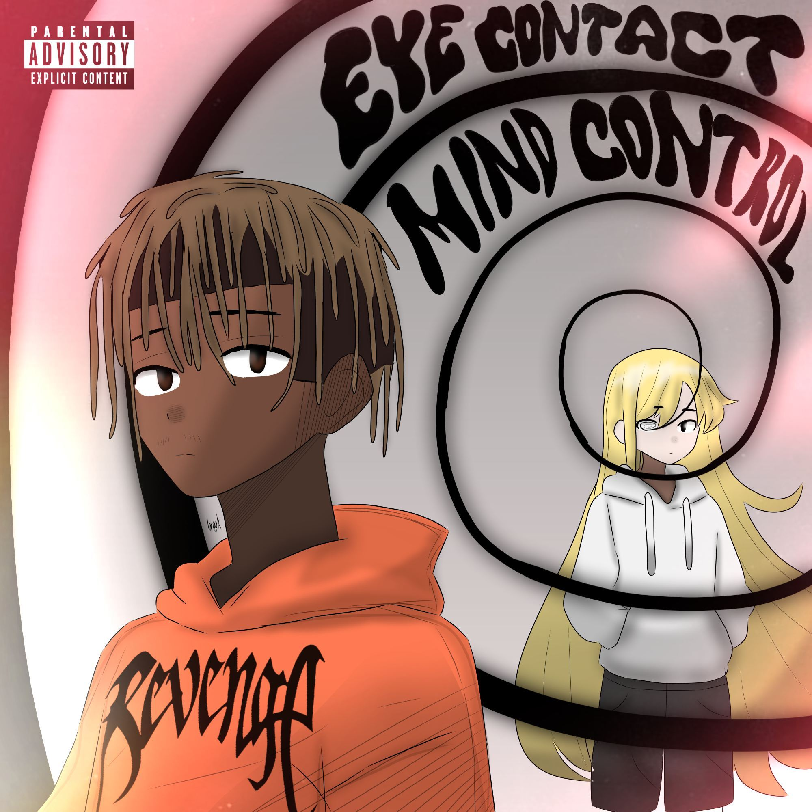
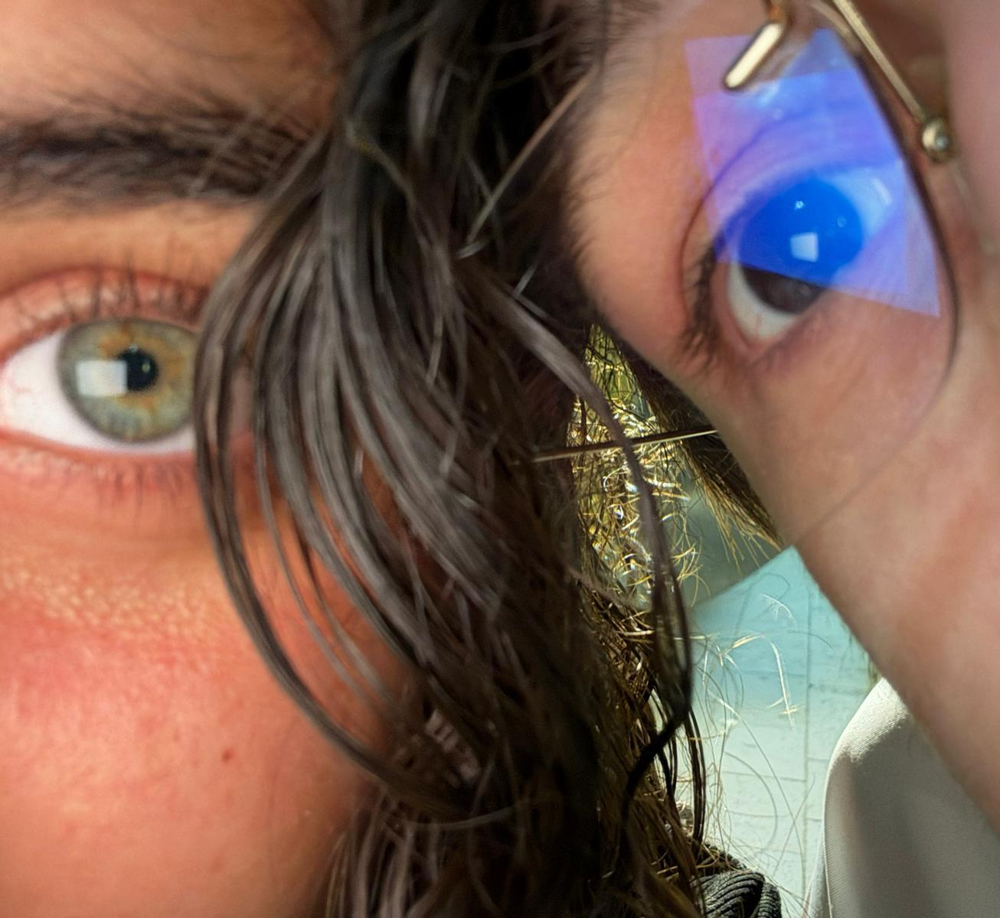
lyrics
Uh, girl, where did you go? I am so alone Thinkin' 'bout the day when you woke up in my arms Now that you're away, feel like I'm falling apart Cross hearts take my soul Coax me, hold me close Eye contact, mind control, oh-oh-oh-oh Hypnotized, I am I don't give a damn Antisocial, yeah Here we go again Listening to Blink-182 while I fuck her Like a Roman Trojan on a rubber Niggas think they funny, no Chris Tucker Tryna break bread, no last supper But back to the point, shorty got me on point Light me up like a joint, while we smokin' a joint And take the walk through the forest, you know the view super gorgeous Enough about us, back to the chorus Uh, girl, where did you go? I am so alone Thinkin' 'bout the day when you woke up in my arms Now that you're away, feel like I'm falling apart Cross hearts take my soul Coax me, hold me close Eye contact, mind control, oh-oh-oh-oh You are my overdose Too many drugs, overload I keep on letting go, go, go, go, go She— no one makes me feel like she— Take my breath away, can't breathe, breathe Why you leave me to cry? Why you leave me to die, die? Uh, girl, where did you go? I am so alone Thinkin' 'bout the day when you woke up in my arms Now that you're away, feel like I'm falling apart Cross hearts take my soul Coax me, hold me close Eye contact, mind control, oh-oh-oh-oh
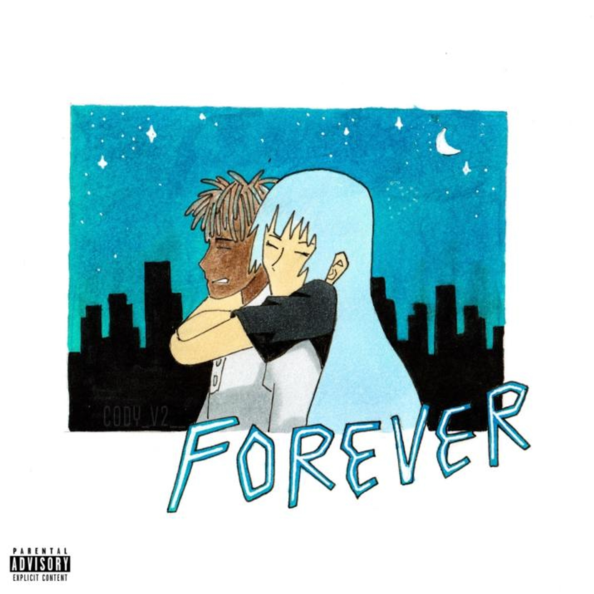
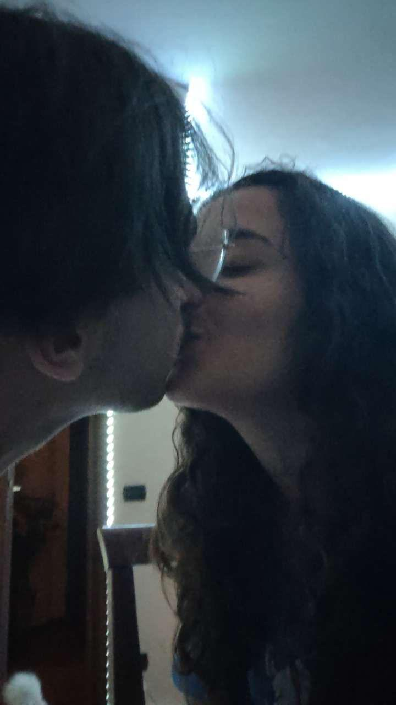
lyrics
Yeah
I want us forever
I want you forever
I want this forever
(DRMZ, you a fool for this one)
I love you, listen
(Forever in my mind, only you)
(The pieces in my life go away with you) I really care for you
(Forever in my mind, only you) I really do
(The pieces in my life) Listen (Go away with you)
(Forever in my mind, only you)
Forever, forever
She stay on my mind like forever, forever (Forever, forever)
For worse or for better
I'm willing to fight for her heart, it's a pleasure (I really am)
Hope she get the message
I swear she an angel, that's word back to Heaven (That's word to God)
Man, fuck all the stressing and fighting
I want you forever, forever (I want you forever)
I'm writing these verses
Rehearse it, record it and play it at your request (And play it at your request)
I feel like it's us two forever
But I think that we just don't know it yet (Don't think that we know it yet)
I swear life is a bitch
I'ma toss it a bone, 'cause I feel like it's playing fetch (I feel like it's playing fetch)
You keepin' my heart or you tossin' it?
Baby, I know I hate playing catch (You know I hate playing catch)
Forever, forever
Say that no matter no weather (Right)
Heart getting colder than winter
But I say, "No matter the weather," and don't you forget it (Right)
I look at love and then have all these questions (Right)
I look at you and then get all these answers (Right)
Fuck all these hoes, can you please mind my manners? (Right)
Monkey around, 'cause you drive me bananas (Right)
You put the nails to my hammer
Without you, I'm deadly like cancer, think of your answer
I feel like it's us and the planet and baby, I'm not being antsy
I'm just hoping you understand me
Look what you do to me, this is so crazy, yeah
I'm happy to call you my lady, yeah
I'm happy to say we together
And I hope this shit last forever, forever, yeah
(Forever in my mind, only you
The pieces in my life go away with you) Yeah
(Forever in my mind, o-o-only you)
I love you
(The pieces in my life go-go-go away with you)
I hope you feelin' this as much as I am
(Forever in my mind, only you)
Yeah, yeah, yeah, yeah
(The pieces in my life go away with you)
Yeah, yeah, yeah, yeah
(Forever in my mind, only you)
It's really crazy how I feel about you
(The pieces in my life go away with you)
This one finna get personal though, check (Mind)
I'm losin' my mind
I'm losin' my mind, you drivin' me crazy (Mind; I'm goin' insane)
The shit we got into
The shit that we been through, shit, life is amazing (I swear, life is amazing) I'm not going nowhere
You not going nowhere, so baby, just face it
You're perfectly perfect for me
Baby, I'm able to actually give you this label, my queen
Girl, you deserve it
We been through our bullshit but, girl, it was worth it
I found Mrs. Right, I can't do no more searchin'
Fuck all the clownin' shit, this not a circus
I love for a reason, I love for a purpose
Wasn't an accident, this is on purpose
Put that on God, I can't do no more merchin' (No)
Don't turn your back, I can't take no more hurtin' (No)
Baby, I swear your love get me the highest
I look down below and I think that I'm flying (Yeah)
But really I'm falling, falling in love with you (Yeah)
Girl, it's because of you, girl, you the finest (Yeah)
Searching for love and you just helped me find it (Yeah)
Let's leave the bullshit and garbage behind us (Yeah)
Fuck the mistakes, let's not let them remind us
'Cause we at the top and let's do some more climbing
Girl, at this point, I'm pretty sure now you know just what you do to me
This shit that's new to me, girl
Finding my way through this jungle of life and it's foolery
So just get used to me, girl
I'm new to relationships, usually girls be abusing me
They just be using me, girl
This got me thinking forever, no matter no weather
That it's gon' be you and me, girl (Yeah)
(Forever in my mind, only you)
Yeah
(The pieces in my life go away with you)
Yeah
(Forever in my mind, only you)
Yeah, yeah
(The pieces in my life go away with you)
And that's how I feel, for real
(Forever in my mind, only you
The pieces in my life go away with you)
I love you
(Forever in my mind, only you
The pieces in my life go away with you)
I love you
(Forever in my mind)
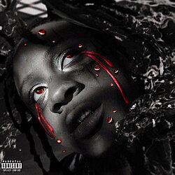
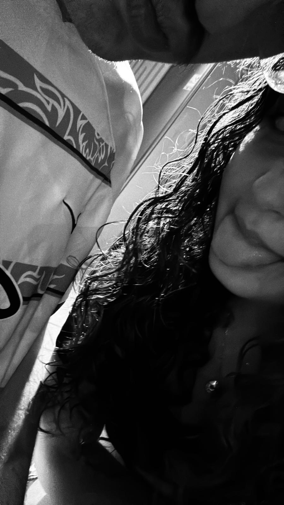
lyrics
Huh, I can't eat, I can't sleep, oh
I can't think, I can't breathe, oh
I can't see, I can't be with you, yeah
I don't know where to go from here
I know you told me not to come here
But I know you'll find some time
Some, yeah, for me
Tryna find my love, shawty
You ain't holding up, shawty
You ain't know enough, shawty, oh
Told you it was love, shawty
Put my love above, shawty
I know what it was shawty, shawty
Damn, shawty, right there, shawty, right there, shawty
Where you gon' go? Where you gon' go?
Where you gon' go girl? Yeah
Huh, I can't eat, I can't sleep, oh
I can't think, I can't breathe, oh
I can't see, I can't be with you, yeah
I don't know where to go from here
I know you told me not to come here
But I know you'll find some time
Some, yeah, for me
It's been a while now
Déjà vu like I'm comin' down a isle
Eyes on you, I hear you loud
And clear like I'm sorting through a crowd
And what you did, won't you say it ain't so
'Cause you lose yourself when you touch and roll
I guess that's why you never think to come home
But by the time you change your mind, I'll be gone
'Cause you should know by now, that I
Huh, I can't eat, I can't sleep, oh
I can't think, I can't breathe, oh
I can't see, I can't be with you, yeah
I don't know where to go from here
I know you told me not to come here
But I know you'll find some time
Some, yeah, for me
Tryna find my love, shawty
You ain't holding up, shawty
You ain't know enough, shawty, oh
Told you it was love, shawty
Put my love above, shawty
I know what it was shawty, shawty
Damn, shawty, right there, shawty, right there, shawty
Where you gon' go? Where you gon' go?
Where you gon' go girl?
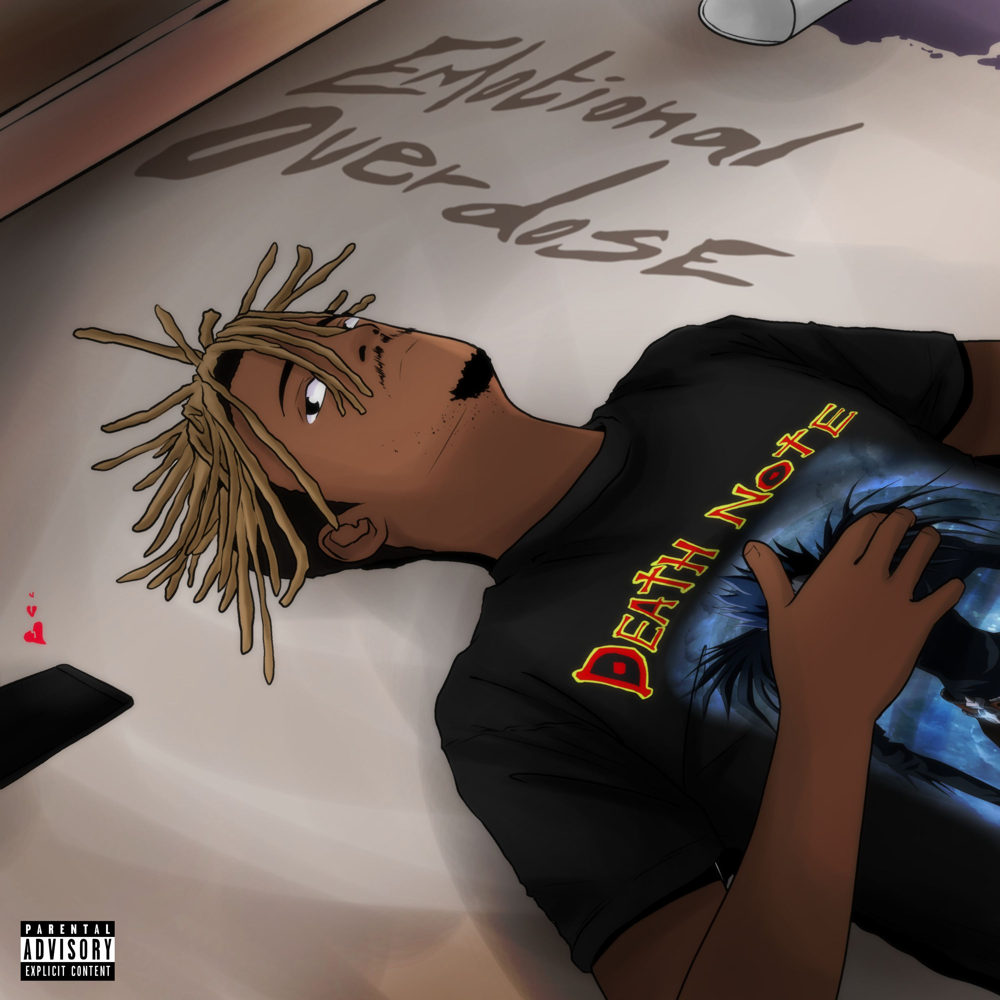
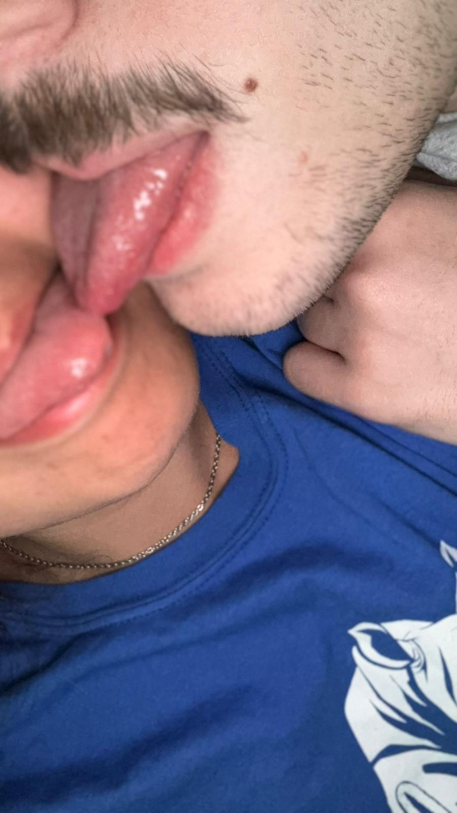
lyrics
We'll be here, lettin' go Someone needs to let me know I'm havin' problems lettin' go Overload I'm havin' problems lettin' go I need solutions, someone let me know I can't help it when I lose control This a emotional overdose I tried to talk but you ain't givin' feedback My depression really hungry and you feed that You say you love me, but I don't know if you mean that And I'm scared You've been helpin' me avoid a relapse All your love and affection, I need that You prolly tired of me, yeah, I understand I'ma make this song bleed, need a Kleenex Girl, you make me happy like a kid at recess But when you mad, you make me feel like a reject, no jerk You separate my angels from my demons Pinch myself 'cause it feels like I'm dreamin' But when you not here for me, the nightmares begin I'm havin' problems lettin' go I need solutions, someone let me know I can't help it when I lose control This a emotional overdose Huh, I cannot pretend that I don't care Hittin' below the belt, that shit hurt, and it's not fair Traumatized thoughts, girl, that shit gon' leave a mark, yeah Imagine takin a bullet to the heart, yeah Nowadays, I don't know where home is But you're the closest thing to a home I have But right about now I feel homeless Back to the heartbreak flashbacks I'm havin' problems lettin' go I need solutions, someone let me know I can't help it when I lose control This a emotional overdose
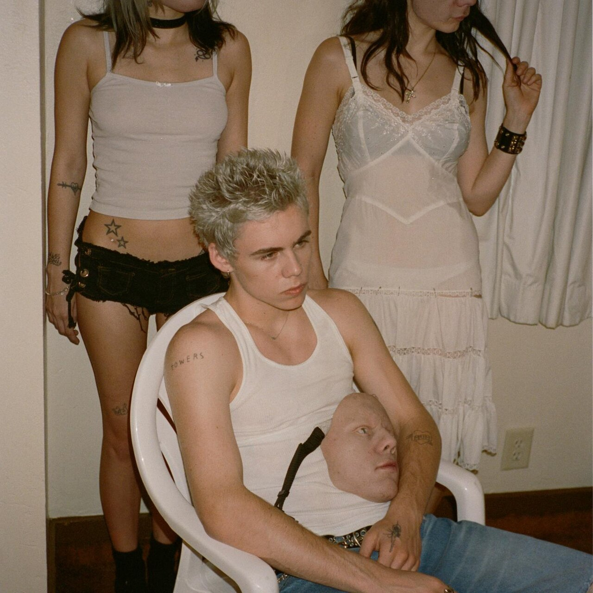
lyrics
How did your heart mend so easy?
Mine still bleeds
Hard to believe you don't need me
All those memories we made are burnin' in my brain
And I'm stuck in yesterday, for me, it's still the same
Tell me how
How did your heart mend so easy?
Mine still bleeds
The ghost of you still floats around my room
It lets me know that letting go's just not the same with you
Now every night I lay here in this bed we made for two
But I'm sleepin' alone while you're out there with somebody in theirs
Oh, I hope that he cares
In the way that I did, you abandoned me here
I'm lost up in my head again, I'm caught inside myself
You promised that it wouldn't end
But you let me, you let me down
How did your heart mend so easy?
Mine still bleeds
Hard to believe you don't need me
All those memories we made are burnin' in my brain
And I'm stuck in yesterday, for me, it's still the same
Tell me how
How did your heart mend so easy?
Mine still bleeds
Don't give up just because it's hard
Come back and heal me before I'm left scarred
You tell me, "We took this too far"
As soon as I let down my guard
When you needed it most, as you cried, I was soaked
Now it's weeks since we spoke, had your mom drop my clothes
And she tried to console me that love comes and goes
And there's nothing you owe me
But you let me, you let me down
How did your heart mend so easy?
Mine still bleeds
Hard to believe you don't need me
All those memories we made are burnin' in my brain
And I'm stuck in yesterday, for me, it's still the same
Tell me how
How did your heart mend so easy?
Mine still bleeds
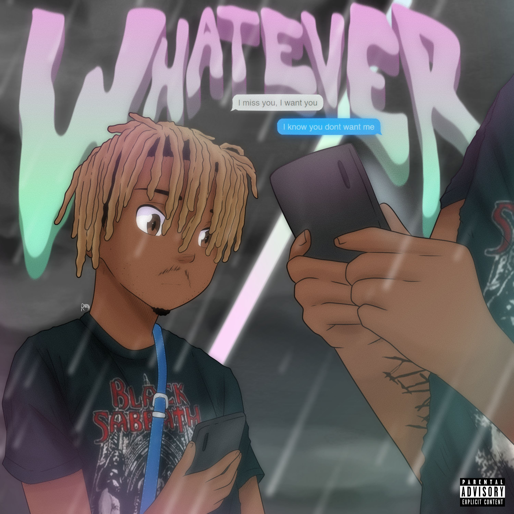
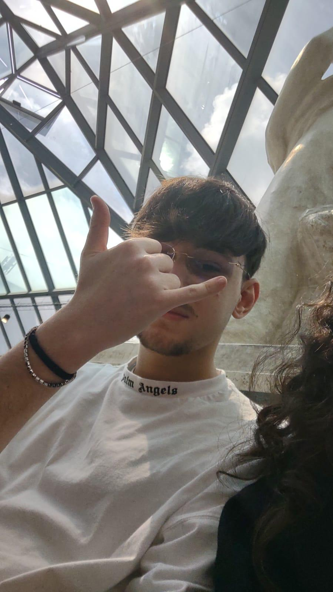
lyrics
Oh-oh-oh, oh-oh, oh-oh, oh I told her she can call me whenever No matter the weather I'm falling apart, I need to get it together You lie, you lie when you say it’s forever You can't lie, I'm high, it ain’t getting no better I gave her all of my effort She say it's whatever I should've put effort in finding somebody better Now, I'm hung like a hook, sing this song forever No pun intended, with these words, I'm a little too clever, hey I'm in her bushes while she walk home I'm her secret admirer, stalk is such a strong term I'm in your bedroom when you not home Love is obsession, when the hell will I learn? You never meant to hurt me, right? I hope that that’s what you’re thinking You said you got a new man, right? I have to make him go missing I don't know what the fuck I was thinking Narcotic nonsense, I’m tweaking There's a hole in my heart, that shit leaking Just hold me close and heal the pain I told her she can call me whenever No matter the weather I'm falling apart, I need to get it together You lie, you lie when you say it's forever You can’t lie, I'm high, it ain't getting no better I gave her all of my effort She say it's whatever I should've put effort in finding somebody better Now I'm hung like a hook, sing this song forever No pun intended, with these words, I'm a little too clever, hey I'm hung, I'm hung, I'm young, I'm dumb In love, I'm sprung, can't hold my tongue Wanna shoutout to my fans, I know you worried In my Instagram comments, asking who hurt me I'm in my feelings over bitches that were doing me dirty I can still see your shadows in my room, baby You just text me the other day, a little too flirty I know you don't want me, you want my money, honey But you can't put a price on love Oh, you can't put a price on us I told her she can call me whenever No matter the weather I'm falling apart, I need to get it together You lie, you lie when you say it's forever You can't lie, I'm high, it ain't getting no better I gave her all of my effort She say it's whatever I should've put effort in finding somebody better Now I'm hung like a hook, sing this song forever No pun intended, with these words, I'm a little too clever, hey
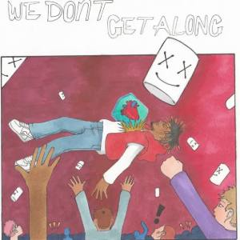
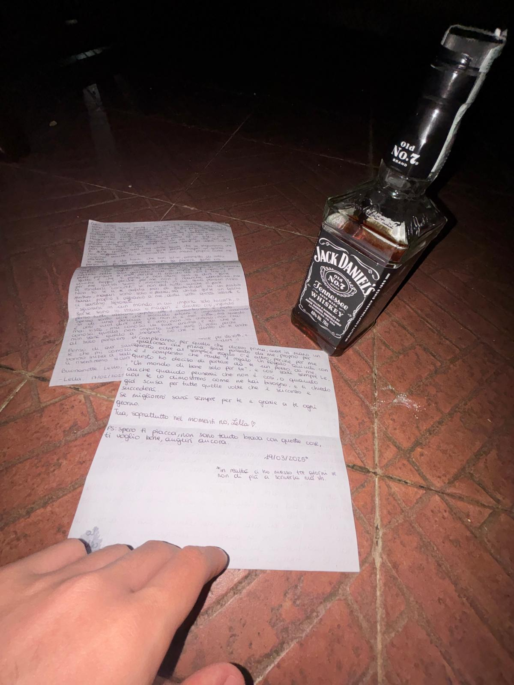
lyrics
Mm
We don't get along
We don't get along
We don't get along
We don't get along
We don't get along
We don't get along
We don't get along
Lookin' in the mirror with these words on my tongue
I've come to this conclusion, we don't get along
Savin' myself from myself is a job, but someone's got to do it
So let's just move along
I'm all fucked up, but it's all my fault
But I ain't wanna do it, but temptation is strong
Now I'm left in the cold, let my story be told
Let my story be told
Oh-oh, oh
Oh-oh, oh
Pain in my cardiac, matches the pain in my brain
Livin' in the shadows, you know where to find me at
The place where they don't dare speak good things
Make-out session, oh, am I late?
Had another make-out session with codeine
I kiss her, she kiss me to sleep
Havin' Hollywood dreams since 2016
We don't get along
Lookin' in the mirror with these words on my tongue
I've come to this conclusion, we don't get along
Savin' myself from myself is a job, but someone's got to do it
So let's just move along
I'm all fucked up, but it's all my fault
But I ain't wanna do it, but temptation is strong
Now I'm left in the cold, let my story be told
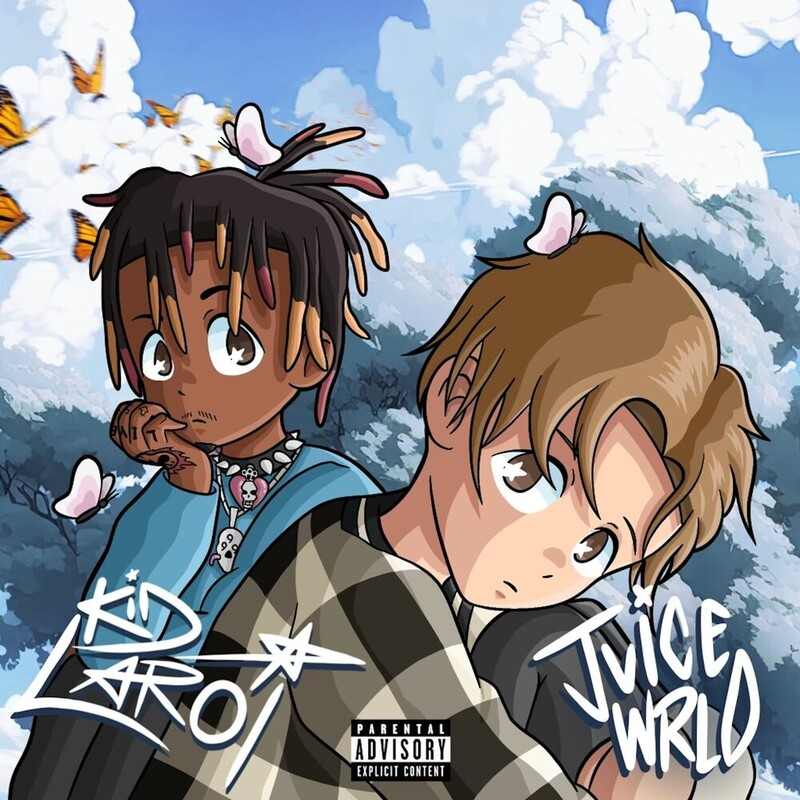
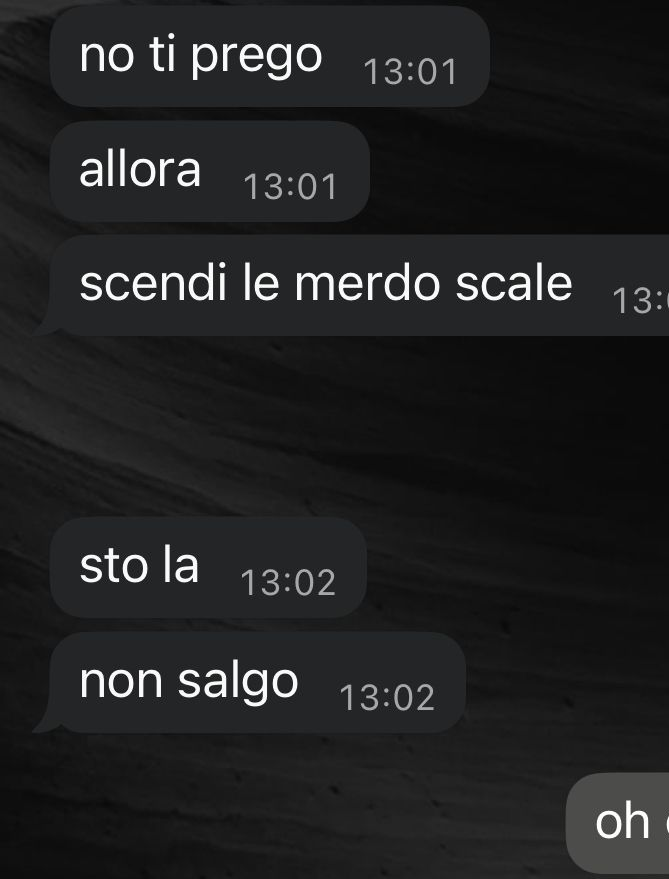
lyrics
I can't play that song 'cause it reminds me of you I can't watch that show 'cause it reminds me of you I can't even go there, it reminds me of you I don't wanna do that, it reminds me of you Cut off all of my friends 'cause they remind me of you I can't drink again 'cause I'm reminded of you I don't wanna do shit that reminds me of you Everything and everywhere reminds me of you I know we can't be together ever again You told me this forever, I ain't know forever could end You had me fucked up, had me thinkin' I would die here for you Shit got me fucked up, can't believe I was so blinded by you But I don't wanna cry Got my finger on the trigger and I'm thinking 'bout a homicide I feel like I could die Maybe if it was all over, I could have you in another life I can't play that song 'cause it reminds me of you I can't watch that show 'cause it reminds me of you I can't even go there, it reminds me of you I don't wanna do that, it reminds me of you Cut off all of my friends 'cause they remind me of you I can't drink again 'cause I'm reminded of you I don't wanna do shit that reminds me of you Everything and everywhere reminds me of you Gotta step out, get some fresh air Posted in the club, saw you pull up with your rebound Remind me again, uh, who kicked who out whose house? Remind me again, uh, who's fuckin' on who now? (Oh) Fightin' for my heart and, baby, I never lose No, I can't get high, 'cause it reminds me of you If you ever needed me, girl, I was flyin' to you Told you that I loved you, girl, I wasn't lyin' to you Fightin' for my heart and, baby, I never lose No, I can't get high, 'cause it reminds me of you If you ever needed me, girl, I was flyin' to you Told you that I loved you, girl, I wasn't lyin' to you I can't play that song 'cause it reminds me of you I can't watch that show 'cause it reminds me of you I can't even go there, it reminds me of you I don't wanna do that, it reminds me of you Cut off all of my friends 'cause they remind me of you I can't drink again 'cause I'm reminded of you I don't wanna do shit that reminds me of you Everything and everywhere reminds me of you
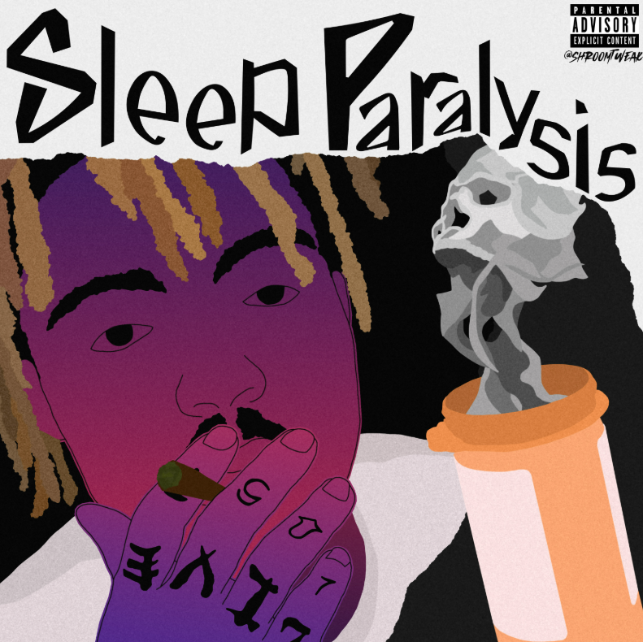
lyrics
Sleep paralysis again
I am trapped inside my bed
Evil thoughts inside my head
Sleep paralysis again
I am trapped inside my bed
Evil thoughts inside my head
I feel your presence on my chest
Lately I ain't been the best
Maybe it's because you left
I wake up, you're layin' next to me
Man, oh, man, that's when I woke up again
It was a dream in a dream, reality ain't my friend, mmh
Man, oh, man, time to get fucked up again
I'm gettin' higher than high so reality won't set in, yeah
Sleep paralysis again
I am trapped inside my bed
Evil thoughts inside my head
Sleep paralysis again
I am trapped inside my bed
Evil thoughts inside my head
I woke up to see your face, but I forgot that you're not there
It's kinda crazy, ain't it complicated? Love, it got me scared
The nights are slumberless, I'm tossin', turnin', thinkin' about my life
And where I went wrong and took that left turn, it feels like I can never do right
Sleep paralysis again
I am trapped inside my bed
Evil thoughts inside my head
Sleep paralysis again
I am trapped inside my bed
Evil thoughts inside my head
Oceans, oceans, wavy oceans, oceans
This commotion, potion, floatin', floatin'
I never knew that, you were the one for me lil' baby
I never knew that, you were the one that would drive me crazy
I never knew that, you were the one for me lil' baby
I never knew that, you were the one to drive me crazy
Destiny is destiny, huh
I need you next to me, huh
Loving you's the recipe, uh
Loving you's the recipe, uh
Hunnid like a centipede, yeah
20 second century, yeah
I don't got time for the past, that's not into me, yeah
Don't come no closer, no composure, I know that, I am a goner
But it ain't over, until it's over, I know that, I am a goner, but it ain't over
I won't add onto your stress, I know that I'm not the best
Give it a break bae, give it a rest
I won't add onto your stress, I know that I'm not the best
Give it a break bae, give it a rest
Sleep paralysis again
I am trapped inside my bed
Evil thoughts inside my head
Sleep paralysis again
I am trapped inside my bed
Evil thoughts inside my head
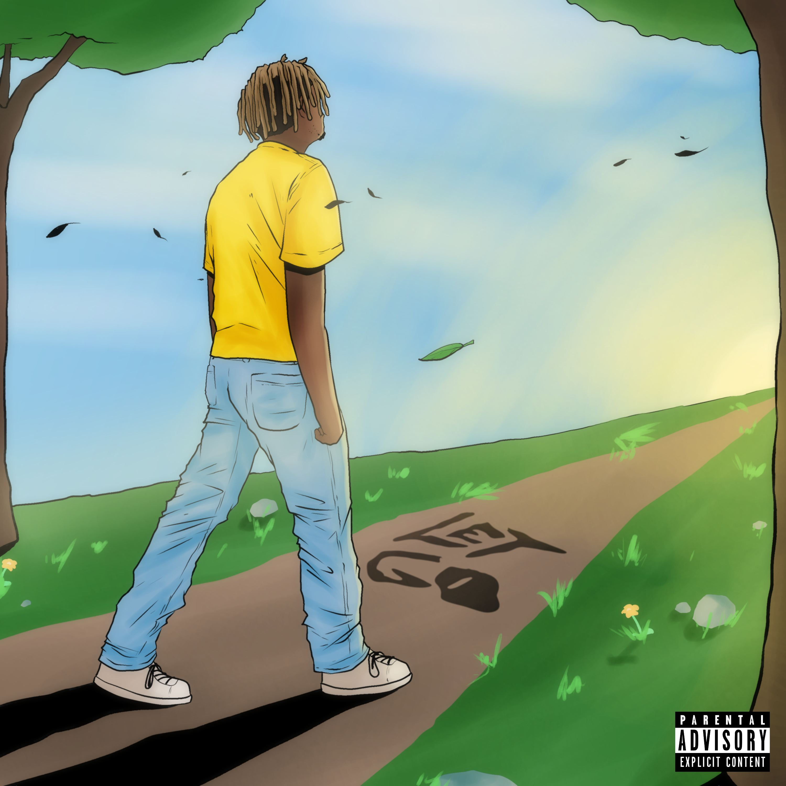
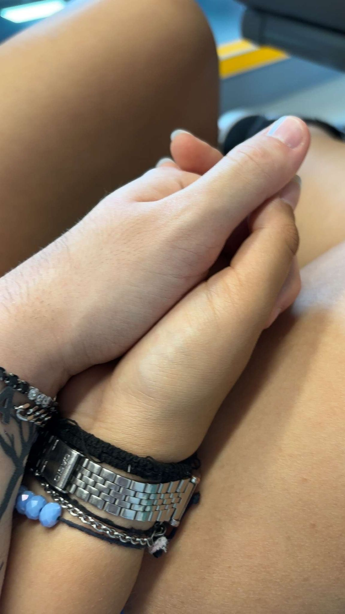
lyrics
Gotta pack my bags and hit the road I don't wanna be here anymore I can’t hold on, I gotta let go But first there's a couple things you should know The day your heart became my home Mine wasn't cold, now I’m froze I don't wanna drop another tear Roll up face blunts to face the fear I wanna drown in your love, I'm scared of the deep end You met my mom and my friends, so I guess I'm too deep in And I won't give up, no, no, but it takes two, it takes two, to Tango What am I to do, it seems I fell in love with you Instincts telling me to move a little closer but I'm scared so Gotta pack my bags and hit the road I don't wanna be here anymore I can't hold on, I gotta let go But first there’s a couple things you should know The day your heart became my home Mine wasn’t cold, now I'm froze Gotta pack my bags and hit the road I don’t wanna be here anymore I can't hold on, I gotta let go But first there's a couple things you should know The day your heart became my home Mine wasn't cold, now I’m froze
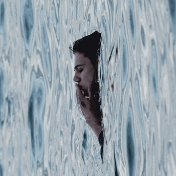
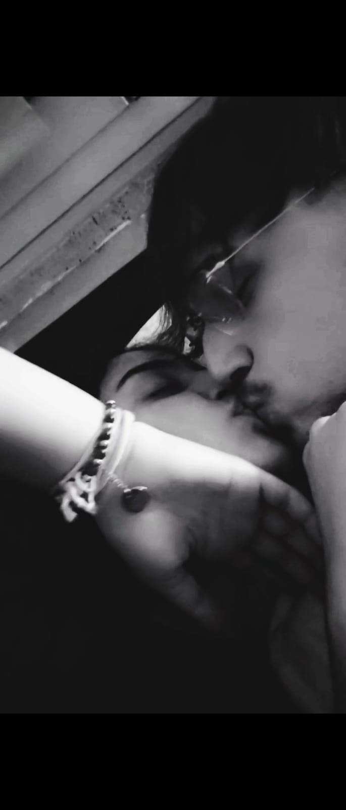
lyrics
Heart on my sleeve, sorry if I've been cold
I was more hurt than what I had led on
But I'm never scared to admit when I'm wrong
I took down the pictures I kept on my walls
I got so mad I wrote three different songs
But I scrapped them all 'cause it's not what I want
So can we stop?
Because I'm so tired
I put away my pride
That's 'cause I love you too much to fight
Or maybe I'm wrong
And maybe you're right
And I'll know we'll both be fine
It just might take some time
You know I love you too much to fight
Or maybe I'm wrong
And maybe you're right
Maybe, yeah
I'm well aware that it's over and done
Yeah, I can admit that I lost and you won
Whatever you need so that we can move on
When I think 'bout the good times, the anger dissolves
Can't have each other, but still got these songs
Part of my life, you'll never completely be gone
So can we stop?
Because I'm so tired
I put away my pride
That's 'cause I love you too much to fight
Or maybe I'm wrong
And maybe you're right
And I'll know we'll both be fine
It just might take some time
You know I love you too much to fight
Or maybe I'm wrong
And maybe you're right
Maybe, yeah
I'll know we'll both be fine
It just might take some time
You know I love you too much to fight
Maybe I'm wrong and maybe you're right
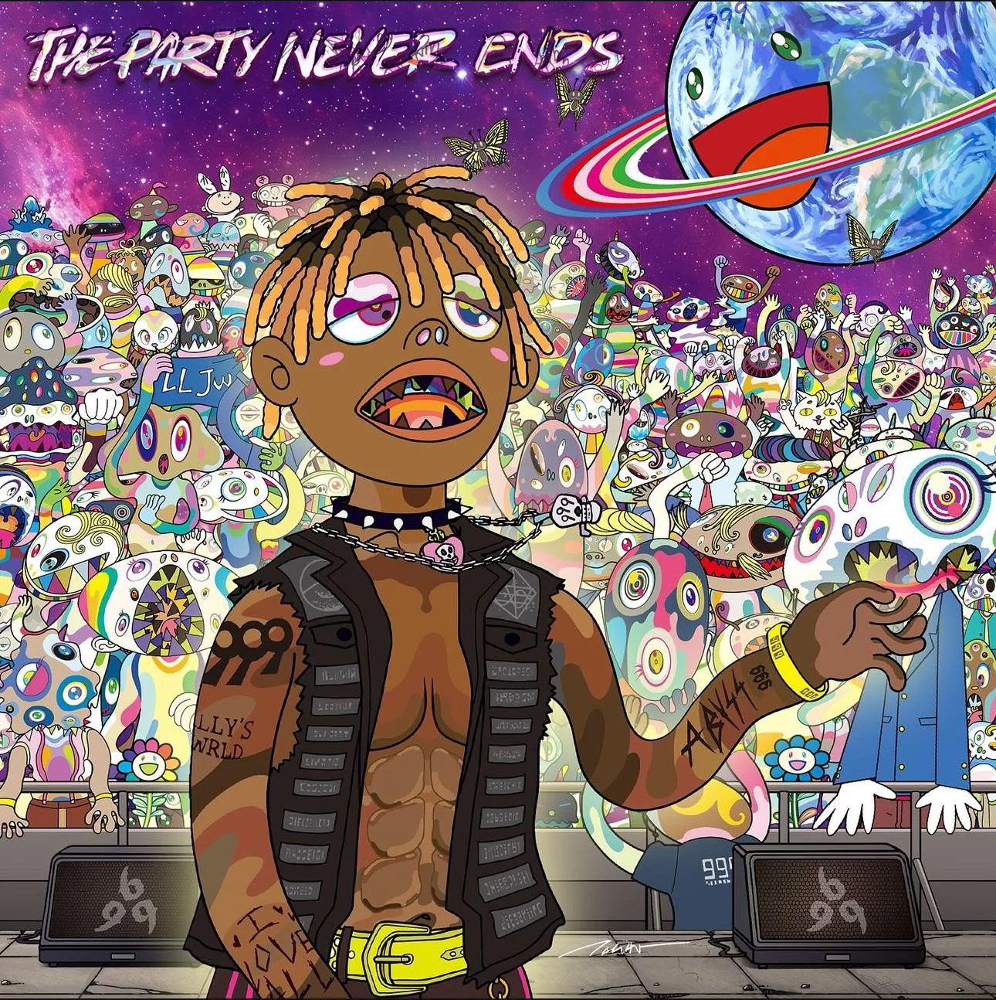
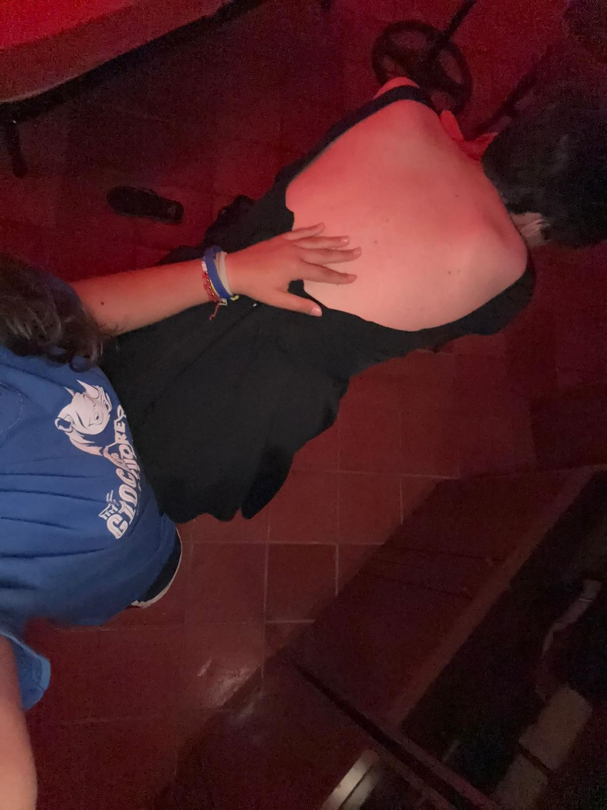
lyrics
Darling, I was wondering if I can Put a yellow diamond ring on your left hand, uh Married to that money, he's my best man You my lover, you my fighter, you my best friend, um And we in it 'til the world ends A understatement is me calling you my girlfriend I am married to this money, he's my best man You my lover, you my fighter, you my best friend, um Balling like a Laker I'm Kobe, and you on the sideline, watching And my ex still tryna cock block it But she can't do shit but sit back and watch it Do you get the logic? If I could be honest, I wanna wake you up And then I'll take you shopping, put you in the finest Baby, you're my highness And you're sure a pretty sight, like watching the horizon Yeah, I knew it all along Now my mind's filled with these love songs In your heart is where I belong In your heart is where I belong I was wondering if I can (I can) Put a yellow diamond ring on your left hand (Left hand) I am married to that money, he's my best man (Best man) I hope I'm doing better than your last man (Than your last man) It's an understatement, calling you my girlfriend (Girlfriend) And you my lover, you my fighter, you my best friend (Best friend) You my everything, it's us until the world ends, you a whirlwind (World ends, whirlwind) Glow all night 'til the early morning (Early morning) Baby, I'm a villain (Yee-haw) I'm gon' take you straight to my lair (Yee-haw) Uh, be my princess like Leia (Yee-haw, need her) Play a game of Halo, I'm a slayer (Yee-haw, hmm) Call me everything except a player You with me every day, don't gotta call me later We making love and you don't make no allegations Go and shake it like a Haitian (Can you feel my love?) Can you feel my love? Oh, oh Can you feel it? Can you feel it? Can you feel it? Can you feel my love? Oh-oh I need ya', ooh, ooh (Ooh, yeah) Uh, can you feel love? (Can you feel love?) This is more than lust (Can you feel love?) I can't get enough (Can you feel my love?) Darling, I was wondering if I can Put a yellow diamond ring on your left hand, uh Married to that money, he's my best man You my lover, you my fighter, you my best friend, um And we in it 'til the world ends A understatement is me calling you my girlfriend I am married to this money, he's my best man You my lover, you my fighter, you my best friend, um
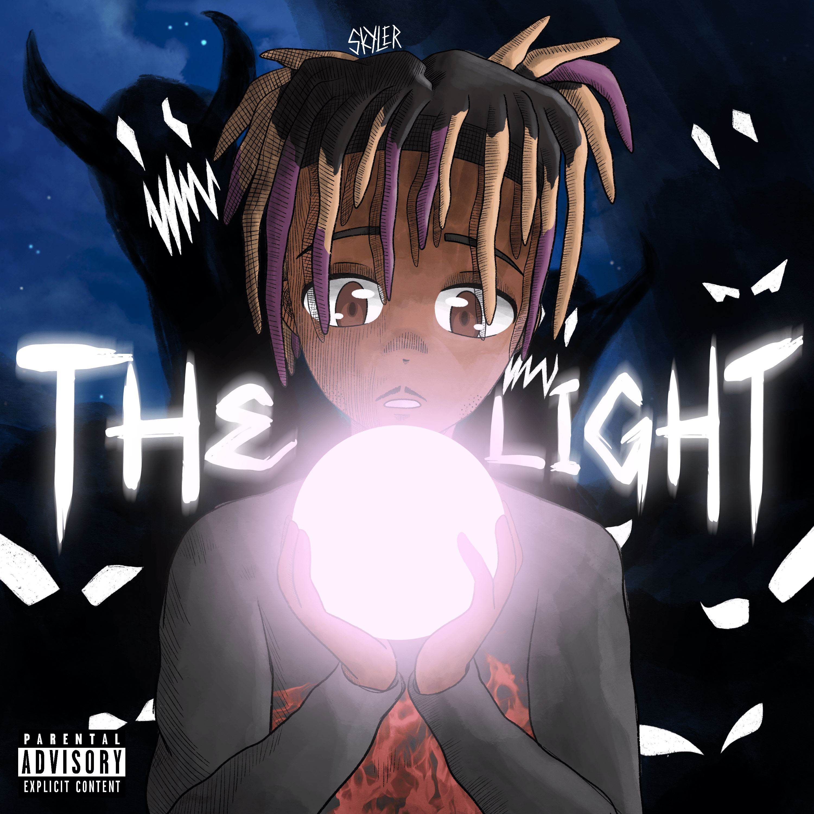

Dettagli
🌕